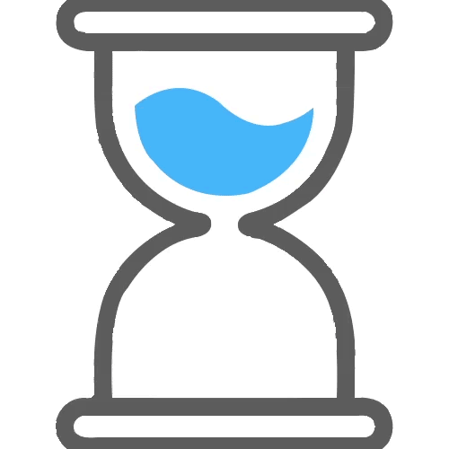

Toggle navigation
NNIT智能监控系统（测试版）
功能选项
人脸录入
照片日志
抓拍日志
初始化识别环境
监控显示面板
监控期间出现的人数：
0
Time
秒
开始监控
停止监控
×
Success!
监控已经开始！
×
Warning!
Better check yourself, you're not looking too good.
Tips:
由于当前摄像设备的摄像能力的限制,有效识别范围<=2m，如需识别更远距离，请更换专业的摄像设备！
监控期间出现的人的工号(详细信息请查看日志)
×
工号&人脸录入
Input with help text
Tips: 录入时，请被录入的员工独自面向摄像头，填写自己的工号，并保存！
×
人脸识别日志
时间点
照片
工号
可信度评分
